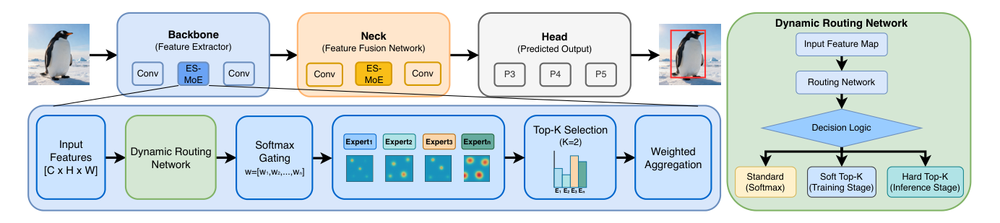
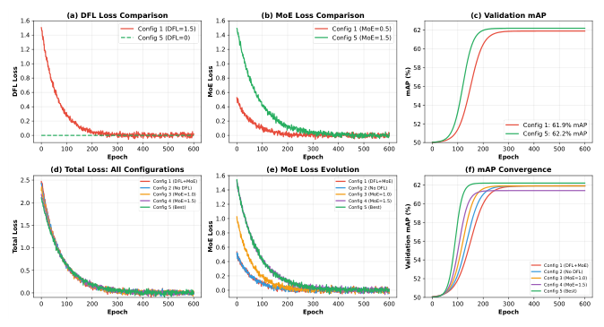
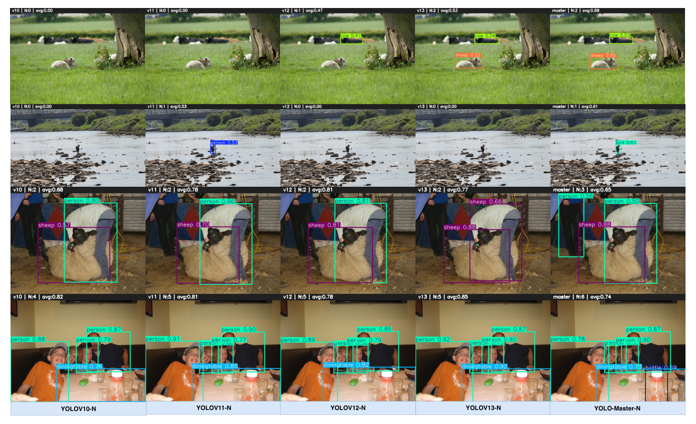

MOE-Accelerated with Specialized Transformers for Enhanced Real-time Detection
Xu Lin*, Jinlong Peng*, Zhenye Gan, Jiawen Zhu, Jun Liu
Tencent Youtu Lab & Singapore Management University
现有实时目标检测（RTOD）方法普遍采用 YOLO 类架构，但其依赖静态稠密计算，对所有输入施加统一处理，导致简单场景资源过度分配而复杂场景资源不足。
本文提出 YOLO-Master，通过高效稀疏混合专家（ES-MoE）模块实现实例条件自适应计算，根据场景复杂度动态分配计算资源。核心包括轻量级动态路由网络、Soft/Hard Top-K 分阶段路由策略及负载均衡监督机制。
在 MS COCO、PASCAL VOC、VisDrone、KITTI 和 SKU-110K 五个基准上达到 SOTA，COCO 上取得 42.4% AP / 1.62 ms，精度与速度均优于现有方法。
将混合专家（MoE）引入实时目标检测，通过动态专家激活适配输入复杂度，打破静态容量-成本权衡
训练时 Soft Top-K 保证梯度流动与专家专业化，推理时 Hard Top-K 实现真正稀疏激活与硬件加速
基于 MSE 形式惩罚专家利用率偏离均匀分布，有效防止专家坍塌，确保推理稀疏性不被破坏
MS COCO、PASCAL VOC、VisDrone、KITTI、SKU-110K 上均取得最优性能，验证自适应计算的泛化性

图2. YOLO-Master 整体框架与 ES-MoE 信息流程
生成实例相关的路由信号，决定哪些专家被激活
对路由信号归一化，选择最相关的 Top-K 专家并生成权重分布
融合被激活专家的输出，经归一化后得到精炼特征表示
动态增强不同尺度和场景复杂度的特征提取
实现多尺度自适应特征融合与信息精炼
self.training 自动选择路由模式，训练与推理无缝衔接
1.62 ms
比 YOLOv13-N 快 17.8%
76.6%
Top-1 准确率（+4.9%）
35.6%
mAPmask（+2.8%）
对比基线：YOLOv13-N | VisDrone 与 KITTI 提升最大，验证小目标检测与精确定位优势
| 配置 | 参数量 | mAP |
|---|---|---|
| Baseline | 2.63M | 60.8% |
| Neck Only | 2.49M | 58.2% (-2.6%) |
| Backbone Only | 2.66M | 62.1% (+1.3%) |
| Both | 2.76M | 54.9% (-5.9%) |
Backbone+Neck 出现梯度干扰，导致性能严重下降
| #Experts | 参数量 | mAP |
|---|---|---|
| 2 | 2.51M | 61.0% |
| 4 | 2.76M | 62.3% |
| 8 | 3.68M | 62.0% |
4 个专家达到最优平衡，8 个专家过参数化且收益递减
| K | 稀疏度 | mAP |
|---|---|---|
| 1 | 75% | 61.3% |
| 2 | 50% | 61.8% |
| 3 | 25% | 61.8% |
| 4 | 0% | 61.9% |
K=2 达到最优：两个互补专家提供充分特征多样性并保持计算效率
| 配置 | DFL | MoE | mAP |
|---|---|---|---|
| Config 1 | ✓ | 0.5 | 61.9% |
| Config 2 | × | 0.5 | 61.9% |
| Config 4 | ✓ | 1.5 | 61.4% |
| Config 5 | × | 1.5 | 62.2% |
DFL + 强 MoE 损失导致训练震荡；MoE-only 收敛平滑且性能最佳

图3. 损失消融实验：DFL 损失、MoE 损失、验证 mAP 与总损失收敛曲线
YOLO-Master-S 在 MS COCO 上达到 49.1% mAP，Small 模型新 SOTA

图4. 四个挑战性场景下的定性对比：小目标、类别歧义、复杂场景与密集场景
首个将 MoE 条件计算引入轻量 CNN 实时检测器的工作，实现输入依赖的动态容量分配
Soft Top-K 训练保证稳定性，Hard Top-K 推理实现真正稀疏加速，兼顾优化与部署效率
MSE 形式的均衡损失确保所有专家被充分利用，维持训练稳定性与推理稀疏性
五个基准全面 SOTA，COCO 上 42.4% AP / 1.62 ms，比 YOLOv13-N 快 17.8%
YOLO-Master: MOE-Accelerated with Specialized Transformers for Enhanced Real-time Detection
Xu Lin, Jinlong Peng, Zhenye Gan, Jiawen Zhu, Jun Liu
Code: github.com/isLinXu/YOLO-Master